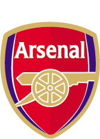
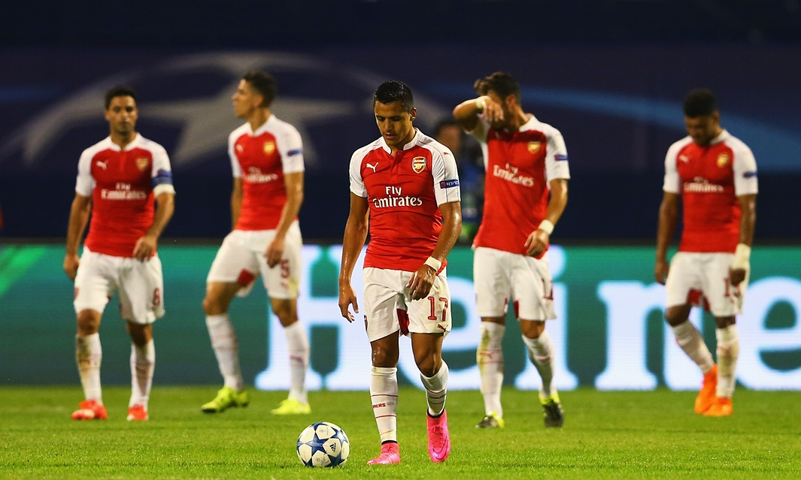

Visit emirates stadium history!
this webage is going to be about arsenal fc and their football season
come on you gunners
The Gunners' started their Champions League campaign with a 2-1 defeat in Croatia thanks to an Alex Oxlade-Chamberlain own goal and a second-half Junior Fernandes header, while striker Olivier Giroud was sent off in the first half for two bookable offences.
Giroud's red card was silly
The second yellow card was a soft one, but he was arguing with the referee after the first one. You're away from home, walk away.
"You've bundles of experience. Why do you want to get involved in this little mish-mash with a referee because he ain't going to listen or pay attention to you? He finds that you're being childish, so stop it."
"He ended up red-carding him because of a clumsy, silly little soft free-kick."
Wenger made six changes to the team that beat Stoke in the Premier League on Saturday, but former Arsenal striker Nicholas said the likes of Giroud, David Ospina, Mikel Arteta and Mathieu Debuchy did little to convince him they should be playing more regularly
who do blame for the loss?